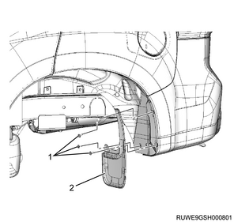
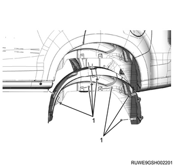

1. Open the engine hood assembly.
2. Disconnect the battery ground cable from the battery.
Caution
3. Raise vehicle using the jack.
1. Remove the fuel filler cap from the filler neck.
Note
Caution
1. Remove the rear mud guard from the body.
Note

1. Remove the inner liner from the rear body.
Note

Note
1. Remove the filler neck from the body.
2. Disconnect the fuel filler hose from the filler neck.
Note
3. Disconnect the breather hose from the filler neck.
4. Disconnect the evaporator hose from the filler neck.
Note